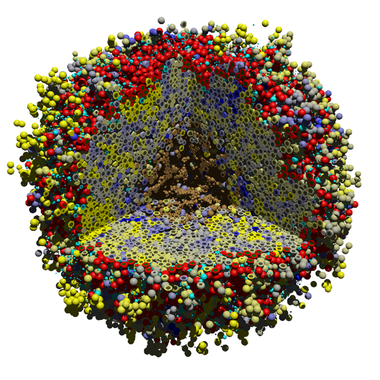
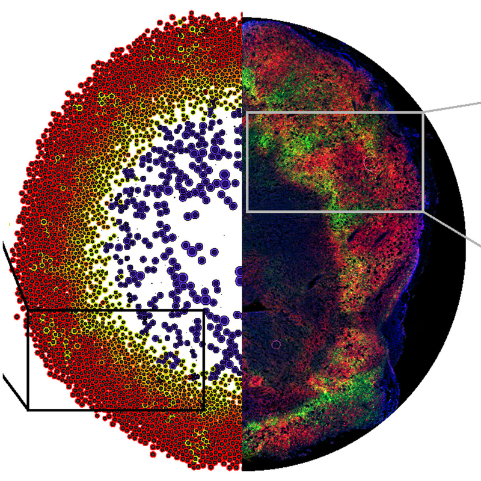
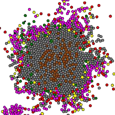

Early 3D PhysiCell model: Immune cells (red) attacking tumor cells (shaded from yellow to blue, with yellow most aggressive but also most immunogenic). From Ghaffarizadeh et al. (2018).
Many multicellular systems problems can only be understood by studying how cells move, grow, divide, interact, and die. Tissue-scale dynamics emerge from systems of many interacting cells as they respond to and influence their microenvironment. The ideal "virtual laboratory" for such multicellular systems simulates both the biochemical microenvironment (the "stage") and many mechanically and biochemically interacting cells (the "players" upon the stage). PhysiCell was developed to fill this role as a virtual laboratory.
Over time, PhysiCell has grown from a C++ framework to a software ecosystem and scientific
community.
Quick Start: Browser-based modeling
Did you know that you can build PhysiCell models in a web browser without writing C++? Give it a try!
PhysiCell aims to provide a robust, scalable, and extensible framework for simulating large systems of cells in 2-D and 3-D tissues on standard desktop computers, on clusters, and in the cloud. Among our design goals:
Scalable and safe: Readily create safe multithreaded 2D and 3D models that with a rigorously vetted and well-maintained source code. Simulations of 10k to 1m cells and a dozens of diffusing substrates are routine on desktop systems.
Physics-based: Cells are not constrained by lattice positions, but instead move according to biomechanical forces. Cells change fluid and solid (biomass) volumes according to physical processes.
Standardized cell behaviors built-in: Support mathematically well-defined models for cycling, death, migration, adhesion, repulsion, secretion/uptake, phagocytosis, effector attack, transformation/differentiation, fusion, and more out-of-the-box. Spend less time reinventing the wheel, and more time writing reusable models.

Hypoxic adaptations in breast cancer: Hypoxic-adapted cells (green) escape through non-hypoxic tumor tissue (red). Simulations (left) predicted observed tumor micropatterning in a mouse model (right). From Rocha et al. (2021).
Microenvironment-driven behavior: Any cell behavior can be modulated by chemical and physical signals in the simulated tissue microenvironment.
Intuitive rules-based modeling: A new, human-readable modeling langauge
can write model rules (e.g., TGF-beta decreases cell migration speed) that are automatically transformed into code at run-time.
Focused on reproducibility: Models can be completely expressed in human-readable rules with well-defined built-in behavior models, rather than one-off hand-written C++ (although hand-written customizations are always supported!). This makes models better documented (including auto-generated annotations) and more reproducible.
Open source and cross-platform compatible: Use standard, compliant C++ (targeting GCC and Intel C++ Compiler) with minimal external dependencies.
Iterative progress: The first release will focus on getting good performance with reasonable accuracy; later releases will improve accuracy, increase performance, and add new capabilities.
Community-driven: We work closely with the community to refine the core code and support new extensions. An active slack workspace helps support new users.
Extensible: The PhysiCell user community has modularly contributed extensions for integrated Boolean networks (PhysiBoSS), ECM fibers (PhysiMeSS), intracellular ODEs (libRoadrunner),
and more.
2017: Template project introduced to facilitate creating new projects
2018: PhysiBoSS 1.0 is first community-developed extension. Integrates Boolean network
2018: Introduced XML-based configuration of user parameters
2018: First cloud-based deployment of individual models (using Jupyter notebooks and nanoHUB)

Updated tumor-immune interactions: Pro-inflammatory macrophages (yellow) draw CD8 effector T cells (magenta) to attack tumor cells (grey), while anti-inflammatory macrophages (green) inhibit T cells and promote exhaustion. From Johnson et al. (2025).
2021: Intracellular structures formally introduced to unify Boolean, ODE, FBA, and other intracellular modeling techniques.
2021: libRoadRunner formally integrated into PhysiCell as officially supported addon (for intracellular ODE models)
2021: First PhysiCell virtual workshop and hackathon
2021-2: Experimental support for GPU-based diffusion solvers via OpenACC.
2022: Standardized models for cell transformation (type changes), attack, phagocytosis, and fusion introduced. Cell adhesion affinities introduced for preferential adhesion. Standardized "advanced" chemotaxis introduced.
2022: First graphical modeling studio introduced (for creating cell definitions and diffusible substrates
2023: Introduced automated (dynamic) cell-cell attachment and detachment for spring-based adhesion.
2023: Modeling language introduced for code-free model development, with CSV-based rule specification. Experimental support for rules in PhysiCell Studio
2023: Full cloud-based modeling studio including integrated rules
2023: PhysiMeSS (agent-based modeling of ) formally integrated into PhysiCell as officially-supported addon
2024: Major refinements of the cell behavior hypothesis grammar, including improved effector attack models, and standardized models of cell damage and repair (cell integrity).